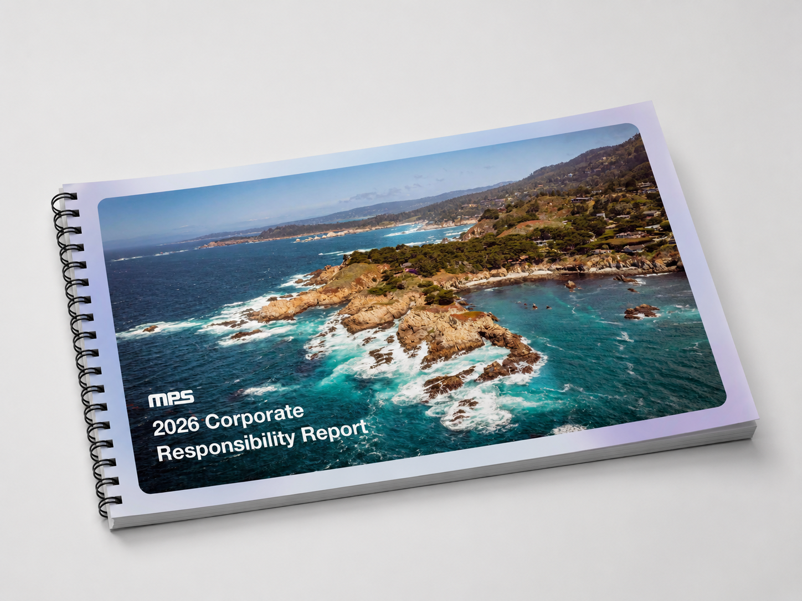
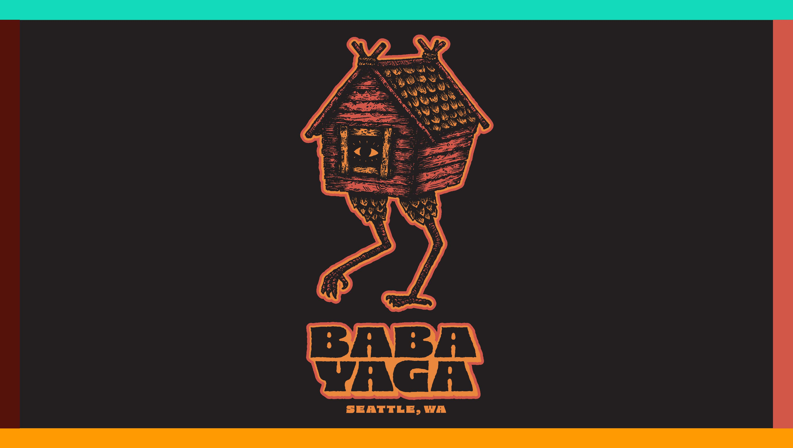
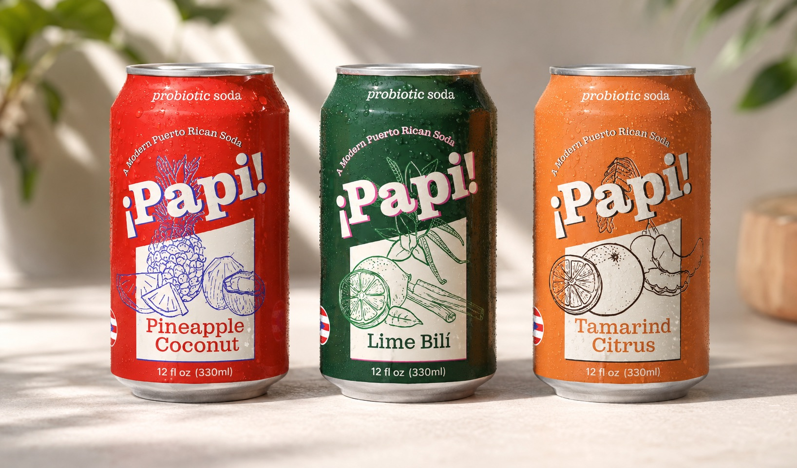

About me
I'm a graphic designer with interests in branding, editorial design and motion graphics. I like work that has a point of view, a little personality, and something worth saying. A lifelong creative with a background in fine art, I'm always driven by learning and making new things.
Finishing an AAS in Graphic Design at Seattle Central College, June 2025. Available for full-time roles and select freelance.
Available for work — Seattle, 2025

Monolithic Power Systems ESG Report
ESG Report & Layout Design

Baba Yaga Brand Guide
Brand Identity & Identity System

Cadence Magazine
Editorial & Magazine Design

Papi Probiotic Soda
Brand Identity, Packaging & Environmental

Rain City Racing
Logo Design & Identity System

Final Countdown
Motion Design

A Week to Remember
Motion Design

Wow Factory
Motion Design

An Arrow's Journey
Motion Design